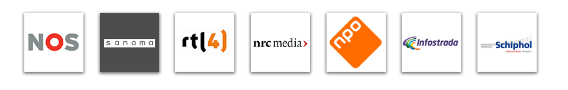

I design and improve websites and apps since 1999. I run a popular Dutch podcast and I like to tinker with technology.
You can mail me at reinier@digitalenergy.nl or skype me at reinierl.
Ga naar Nederlandse versie

I speak on events (Dutch)